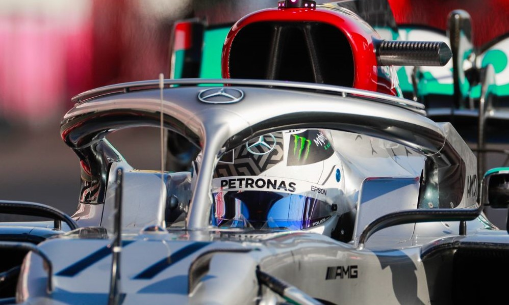
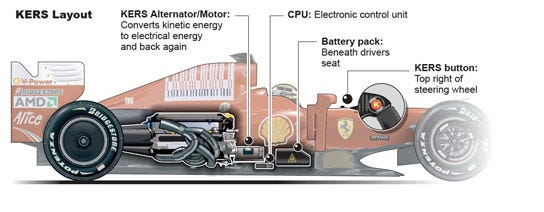
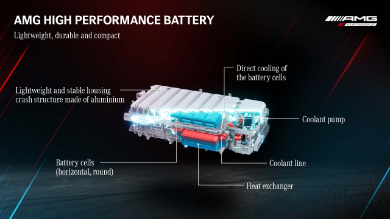
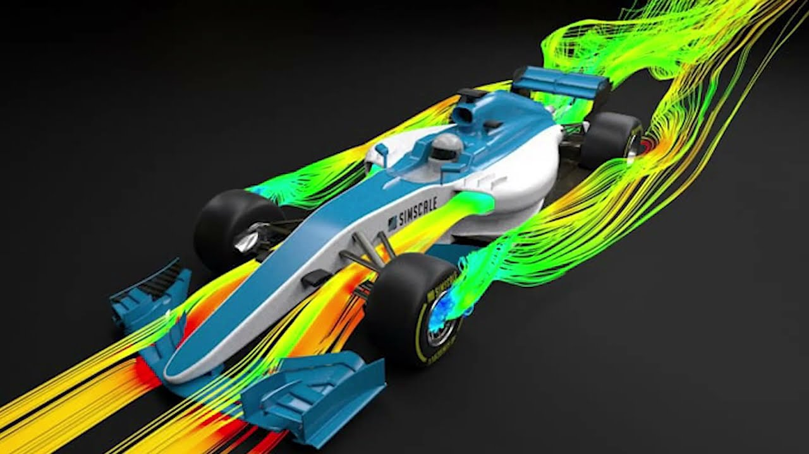

Forma-1 Technológia
Hibrid V6-os motor
A Forma-1-es autók V6-os turbóhibrid motorjai rendkívül összetett mérnöki alkotások, amelyek ötvözik a belső égésű motorokat és az elektromos erőforrásokat. Ezek a motorok nagy teljesítményre és energiahatékonyságra lettek tervezve.

HALO fejvédelmi rendszer
A HALO egy titánból készült fejvédelmi rendszer, amely megvédi a pilótát a repülő törmelékekkel és becsapódásokkal szemben. Bevezetése óta több súlyos balesetben bizonyította hatékonyságát, például 2020-ban Romain Grosjean és 2021 Lewis Hamilton baleseténél.
ERS rendszer
Az ERS (Energy Recovery System) a hibrid motor része, amely fékezés közben visszanyeri az energiát, és azt elektromos teljesítményként újra felhasználja gyorsításkor. Ez egy modern technológia, amely kulcsfontosságú az energiahatékonyság szempontjából.
Hibrid rendszerek akkumulátora
A Forma-1-es autók akkumulátorrendszere a visszanyert energia tárolására és felhasználására szolgál. Ezek az akkumulátorok rendkívül könnyűek, ugyanakkor nagy energiasűrűséggel rendelkeznek, biztosítva a versenyautók csúcsteljesítményét.
Aerodinamika
Az aerodinamikai fejlesztések elengedhetetlenek a Forma-1-ben. Az autók szárnyai és diffúzorai jelentősen növelik a leszorítóerőt, miközben minimalizálják a légellenállást. Ezáltal javul a kanyarodási sebesség és a stabilitás.
